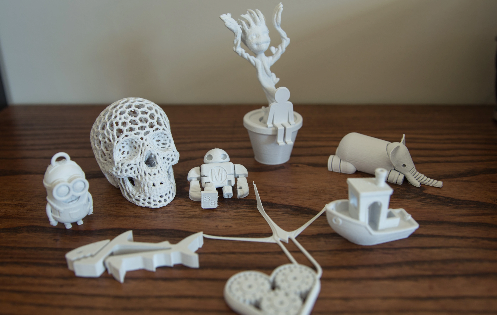

♦ 3D printing is technology that has gained significant traction in various fields over the past few years. It works by creating three-dimensional objects layer by layer from a digital file, using materials such as plastics, metals, ceramics, and even organic materials like food or living cells.
♦ 3D printing begins with creating a digital model of the object using computer-aided design (CAD) software or by 3D scanning an existing object. The digital model is then sliced into thin horizontal layers by slicing software, and the 3D printer builds the object layer by layer, following the instructions from the sliced file.
♦ There are several types of 3D printing technologies, including Fused Deposition Modeling (FDM), Stereolithography (SLA), Selective Laser Sintering (SLS), Direct Metal Laser Sintering (DMLS), and Electron Beam Melting (EBM). Each technology has its advantages and limitations in terms of resolution, speed, material compatibility, and cost.
Here we use Cura software to create our design!
The machine used for our 3D Printing is-
♦ Applications such as :- 3D printing has applications in various industries, including manufacturing, healthcare, automotive, aerospace, fashion, and consumer goods. It's used for rapid prototyping, custom manufacturing, creating complex geometries, and even producing end-use parts and products.
♦ADVANTAGES & DISADVANTAGES OF 3D PRINTING♦
ADVANTAGES
⊸ We can print even complex object design using 3D printer.
⊸ Create prototype in couple of hours which increase the designing process speed.
⊸ Basic material used for 3D printing is plastics thus the object printed by this one are much lighter than traditional one.
⊸ Reduces the quantity of waste materials created during the production process.
DISADVANTAGES
⊸ Since the dimensions integrated into 3D printers is relatively small, which restricting the part sizes .
⊸ Though its new technology it offen reqquires trial and error method when creating parts on a 3D printer.
⊸ Very few materials are available for printing in 3D printing technology.
The machine contains a bed to hold the forming structure. Then there is a nip from which the melted filament comes and forms the structure by tracing over it multiple times.
It works as follows -
♦ Some projects in the machine may require many hours to complete it's formation. A sudden break in the process may also cause failure in the complete project.
♦ The nip is to be cleaned with the help of the needle to avoid the blockages during the printing.
In 3D printing, various types of support are often required to ensure the successful fabrication of complex geometries and overhangs. Here are some common types of support used in 3D printing:
♦ Overhang support:This is the most common type of support used in 3D printing. It provides temporary structural support for overhanging features of the model during printing. Overhang support is typically automatically generated by slicing software based on a predefined angle threshold.
♦ Bridging support: Bridging support is used to support horizontal spans or bridges between two points in the model. It prevents sagging or collapsing of these unsupported sections during printing.
♦ Raft support: A raft is a flat base layer that is printed underneath the object being printed. It provides better adhesion to the build platform and helps to prevent warping of the model during printing. Raft support is especially useful for models with small contact areas or those prone to warping.
♦ Tree support: Tree support structures are designed to minimize material usage and post-processing efforts. They branch out from the build platform to support overhanging features of the model. Tree supports are often more efficient and consume less material compared to traditional linear supports.
Few examples of 3D printed objects are -

